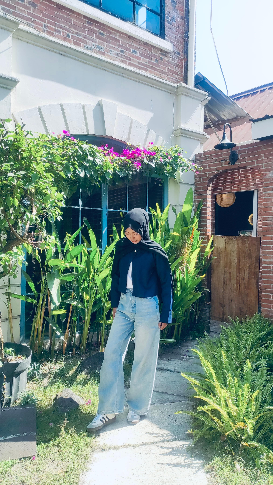
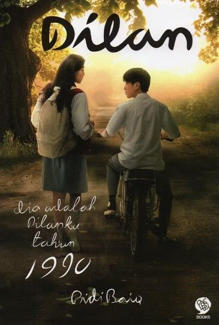

MY PLAYLIST
Musik
good music, good mood
Musik menjadi salah satu hal yang selalu menemani berbagai aktivitas yang aku lakukan. Rasanya hampir setiap suasana punya lagu sendiri.
A LITTLE PIECE OF MY WORLD
halaman kecil tentang siapa aku, hal-hal yang kusukai, kebiasaan kecil, dan cerita yang membuatku menjadi diriku sendiri.

✿this is me ♡
HELLO, I'M
Sedikit tentang diriku yang ingin aku kenalkan melalui halaman ini.
THINGS I LOVE
Beberapa hal sederhana yang selalu punya tempat sendiri di keseharianku.
good music, good mood
Musik menjadi salah satu hal yang selalu menemani berbagai aktivitas yang aku lakukan. Rasanya hampir setiap suasana punya lagu sendiri.
stories I keep
Beberapa novel yang pernah aku baca dan meninggalkan cerita atau kesan tersendiri.

Dikta dan Hukum

Dilan 1990

Rumah untuk Alie
stories on screen
Beberapa film yang pernah aku tonton dan punya cerita atau kesan tersendiri.
Avatar: The Way of Water

Infinity Castle

Toy Story 5

Komang
Avatar: Fire and Ash
little places, little memories
Aku suka mengunjungi tempat-tempat baru, terutama cafe dengan suasana yang nyaman dan menarik.
a little coffee date
cafe memory ♡slow afternoon
little place ♡coffee & stories
cafe memory ♡another little place
memory ♡✦ nanti foto cafe kamu bisa ditaruh di sini ✦
LITTLE THINGS
Hal-hal kecil yang mungkin terlihat sederhana, tapi cukup menggambarkan diriku.
Kopi menjadi salah satu teman kecil yang menyenangkan di tengah aktivitas.
Dengerin musik saat melakukan hampir apa pun.
Sering menceritakan apa pun yang sudah dialami.
Kadang membutuhkan waktu lama sebelum melakukan sesuatu.
Suka mencoba style makeup baru dan bereksperimen dengan tampilan.
WHAT I'M INTO
A NOTE TO MYSELF
Aku ingin terus berkembang melalui pengalaman yang aku jalani. Bagiku, kemampuan bukan hanya tentang apa yang bisa dilakukan, tetapi juga bagaimana cara berkomunikasi, bekerja sama, memahami orang lain, dan menghadapi berbagai situasi.
— Mutiara ♡MY LITTLE PRINCIPLE
— Mutiara
A LITTLE SECRET
Beberapa fakta random tentang aku ♡
Punya playlist sesuai mood.
Thank you for taking a little walk through my scrapbook.